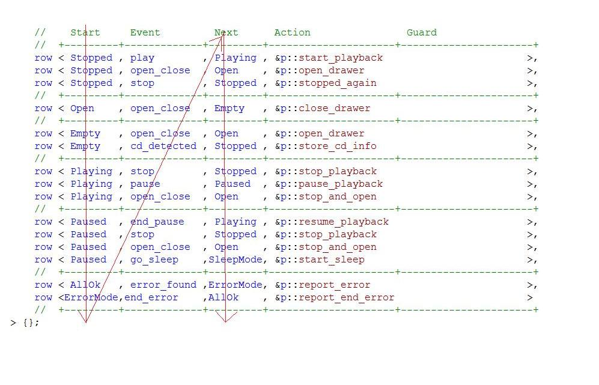

Internals
This chapter describes the internal machinery of the back-end, which can be useful for UML experts but can be safely ignored for most users. For implementers, the interface between front- and back-end is also described in detail.
Frontend / Backend interface
The design of MSM tries to make front-ends and back-ends (later) to be as interchangeable as possible. Of course, no back-end will ever implement every feature defined by any possible front-end and inversely, but the goal is to make it as easy as possible to extend the current state of the library.
To achieve this, MSM divides the functionality between both sides: the front-end is a sort of user interface and is descriptive, the back-end implements the state machine engine.
MSM being based on a transition table, a concrete state machine (or a given front-end) must provide a transition_table. This transition table must be made of rows. And each row must tell what kind of transition it is and implement the calls to the actions and guards. A state machine must also define its regions (marked by initial states). And that is about the only constraints for front-ends. How the rows are described is implementer’s choice.
Every row must provide:
-
A
Sourcetypedef indicating, well, the type of the source state. -
A
Targettypedef indicating, well, the type of the target state. -
An
Evttypedef indicating the type of the event triggering the transition. -
A
row_type_tagtypedef indicating the type of the transition. -
Rows having a type requiring transition actions must provide a static function
action_callwith the following signature:template <class Fsm,class SourceState,class TargetState,class AllStates>static void action_call (Fsm& fsm, Event const& evt, SourceState&, TargetState&, AllStates&)The function gets as parameters the (back-end) state machine, the event, source and target states and a container (in the current back-end, a fusion::set) of all the states defined in the state machine. For example, as the back-end has the front-end as basic class,
action_callis simply defined as(fsm.*action)(evt). -
Rows having a type requiring a guard must provide a static function
guard_callwith the following signature:``template <class Fsm,class SourceState,class TargetState,class AllStates>static bool guard_call (Fsm&, Event const&, SourceState&, TargetState&, AllStates&) -
The possible transition (row) types are:
-
a_row_tag: a transition with actions and no guard
-
g_row_type: a transition with a guard and no actions
-
_row_tag: a transition without actions or guard
-
row_tag: a transition with guard and actions
-
a_irow_tag: an internal transition (defined inside the
transition_table) with actions -
g_irow_tag: an internal transition (defined inside the
transition_table) with guard -
irow_tag: an internal transition (defined inside the
transition_table) with actions and guards -
_irow_tag: an internal transition (defined inside the
transition_table) without action or guard. Due to higher priority for internal transitions, this is equivalent to a "ignore event" -
sm_a_i_row_tag: an internal transition (defined inside the
internal_transition_table) with actions -
sm_g_i_row_tag: an internal transition (defined inside the
internal_transition_table) with guard -
sm_i_row_tag: an internal transition (defined inside the
internal_transition_table) with actions and guards -
sm__i_row_tag: an internal transition (defined inside the
internal_transition_table) without action or guard. Due to higher priority for internal transitions, this is equivalent to an "ignore event"
-
Furthermore, a front-end must provide the definition of states and state machines. State machine definitions must provide (the implementer is free to provide it or let it be done by every concrete state machine; different MSM front-ends took one or the other approach):
-
initial_state: This typedef can be a single state or a mpl container and provides the initial states defining one or several orthogonal regions. -
transition_table: This typedef is a MPL sequence of transition rows. -
configuration: this typedef is a MPL sequence of known types triggering special behavior in the back-end, for example if a concrete fsm requires a message queue or exception catching.
States and state machines must both provide a (possibly empty) definition of:
-
flag_list: the flags being active when this state or state machine becomes the current state of the fsm. -
deferred_events: events being automatically deferred when the state is the current state of the fsm. -
internal_transition_table: the internal transitions of this state. -
on_entryandon_exitmethods.
Generated state ids
Normally, one does not need to know the ids are generated for all the
states of a state machine, unless for debugging purposes, like the
pstate function does in the tutorials in order to display the name of
the current state. This section will show how to automatically display
typeid-generated names, but these are not very readable on all
platforms, so it can help to know how the ids are generated. The ids are
generated using the transition table, from the Start'' column up to
down, then from the Next'' column, up to down, as shown in the next
image:

Metaprogramming tools
We can find for the transition table more uses than what we have seen so far. Let’s suppose you need to write a coverage tool. A state machine would be perfect for such a job, if only it could provide some information about its structure. Thanks to the transition table and Boost.MPL, it does.
What is needed for a coverage tool? You need to know how many states are defined in the state machine, and how many events can be fired. This way you can log the fired events and the states visited in the life of a concrete machine and be able to perform some coverage analysis, like ``fired 65% of all possible events and visited 80% of the states defined in the state machine''. To achieve this, MSM provides a few useful tools:
-
generate_state_set<transition table>: returns a mpl::set of all the states defined in the table.
-
generate_event_set<transition table>: returns a mpl::set of all the events defined in the table.
-
using mpl::size<>::value you can get the number of elements in the set.
-
display_type defines an operator() sending typeid(Type).name() to cout.
-
fill_state_names fills an array of char const* with names of all states (found by typeid).
-
using mpl::for_each on the result of generate_state_set and generate_event_set passing display_type as argument will display all the states of the state machine.
-
let’s suppose you need to recursively find the states and events defined in the composite states and thus also having a transition table. Calling recursive_get_transition_table<Composite> will return you the transition table of the composite state, recursively adding the transition tables of all sub-state machines and sub-sub…-sub-state machines. Then call generate_state_set or generate_event_set on the result to get the full list of states and events.
An example shows the tools in action.